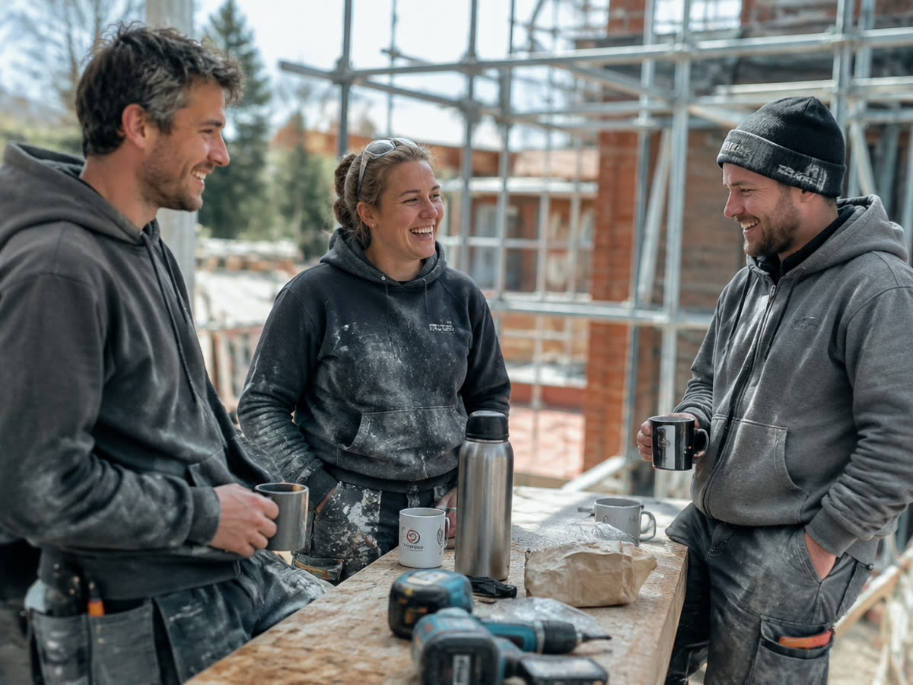

Mitarbeiter über Social Media finden
Viele Betriebe starten wegen der Kundschaft und stellen fest, dass der größere Nutzen bei Bewerbungen liegt.
Viele Betriebe starten mit Social Media, um Kundschaft zu gewinnen, und stellen nach einigen Monaten fest, dass der größere Nutzen woanders liegt: bei Bewerbungen. In Branchen, in denen seit Jahren niemand mehr auf Stellenanzeigen antwortet, ist das kein Nebeneffekt, sondern oft der eigentliche Grund weiterzumachen.

Warum Anzeigen nicht mehr funktionieren und Videos schon
Eine Stellenanzeige erreicht Menschen, die gerade suchen. Das sind in handwerklichen Berufen sehr wenige, weil die meisten Fachkräfte in Arbeit stehen und sich nicht aktiv umsehen.
Ein Reel erreicht Menschen, die nicht suchen. Jemand sieht, wie in einem Betrieb dreißig Kilometer entfernt gearbeitet wird, wie der Ton untereinander ist, wie die Werkstatt aussieht, und denkt zum ersten Mal darüber nach, ob es dort besser wäre als dort, wo er gerade ist. Dieser Gedanke entsteht nicht durch eine Anzeige.
Dazu kommt die Zielgruppe. Wer heute eine Ausbildung sucht, ist auf TikTok und Instagram unterwegs und nicht auf Stellenbörsen. Für diese Altersgruppe ist das Profil eines Betriebs die erste und manchmal einzige Informationsquelle. Welche Plattform dafür besser passt, steht unter Instagram oder TikTok?
Was Bewerber tatsächlich sehen wollen
Nicht das Firmengebäude und nicht den Fuhrpark. Sondern: Mit wem arbeite ich zusammen? Wie wird miteinander geredet? Wie sieht ein normaler Tag aus? Bekomme ich etwas beigebracht oder werde ich nur mitgeschleppt?
Daraus folgen Videos, die anders aussehen als Kundenvideos. Ein Azubi erzählt, was er in der ersten Woche gemacht hat. Die Mittagspause. Jemand erklärt ein Werkzeug, das er gerade zum ersten Mal benutzt. Der Moment, in dem etwas schiefgeht und das Team es gemeinsam löst.
Gerade der letzte Punkt wirkt stärker, als die meisten erwarten. Ein Betrieb, in dem nie etwas schiefgeht, ist unglaubwürdig. Einer, der zeigt, wie er damit umgeht, wirkt wie ein Ort, an dem man Fehler machen darf.

Lassen Sie die Leute selbst reden
Der häufigste Fehler ist, dass der Chef erklärt, was für ein guter Arbeitgeber der Betrieb ist. Das glaubt niemand, und zwar unabhängig davon, ob es stimmt.
Überzeugend sind die Mitarbeiter selbst, in ihren eigenen Worten, ohne Textvorlage. Ein Satz wie "Ich hätte nicht gedacht, dass ich nach einem halben Jahr schon alleine rausfahre" sagt mehr über einen Betrieb aus als jede Auflistung von Vorteilen.
Dazu gehört Freiwilligkeit. Niemand sollte vor die Kamera, der nicht will, und wer zu sehen ist, muss zustimmen, bevor das Video online geht. Bei Mitarbeitern gehört das schriftlich festgehalten. Wie man auch ohne Gesichter arbeiten kann, steht unter Reels ohne Gesicht.
Was danach passieren muss
Wenn die Videos wirken, kommen Nachrichten, und zwar formlos: eine Direktnachricht, manchmal nur eine Frage, ob gerade jemand gesucht wird. Wer darauf mit "Bitte bewerben Sie sich schriftlich mit vollständigen Unterlagen" antwortet, hat den Vorteil wieder verspielt.
Halten Sie den ersten Schritt klein. Antworten Sie in derselben Nachricht, schlagen Sie ein kurzes Telefonat oder einen Probetag vor. Unterlagen kommen später, wenn überhaupt.
Sorgen Sie außerdem dafür, dass das Profil die Frage beantwortet, ob gerade jemand gesucht wird. Ein Satz im Profiltext und ein Link genügen. Was ins Profil gehört, steht unter Profil und Plan.
Wenn Sie ausprobieren wollen, wie Ihr Betrieb in solchen Videos wirkt: Der erste Monat kostet nichts, und Suche nach Personal lässt sich dabei ausdrücklich als Schwerpunkt setzen.


Lernen wir uns kennen.
15 Minuten am Telefon oder per Video. Danach wissen Sie, ob und wie Social Media für Ihren Betrieb funktioniert.